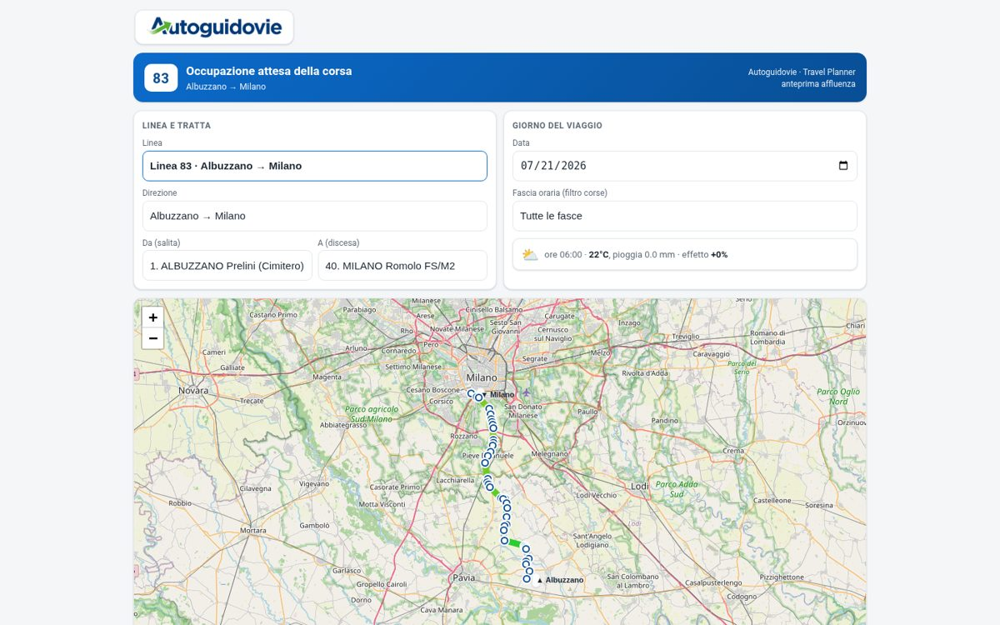
AutoguidovieTeam Autoguidovie
Previsione Occupazione Corse
Quanto sarà piena la corsa delle 7:40? Mappa della linea, fermate e affluenza attesa corsa per corsa, con il meteo del giorno integrato nel modello di previsione.
Cinque giorni fa quasi nessuno di loro aveva mai scritto una riga di codice. All'ultimo giorno della summer school hanno presentato undici applicazioni funzionanti, costruite con l'AI sui processi reali delle loro aziende: manutenzione predittiva, programmazione di linea, report di collaudo, pipeline commesse. Non esercizi — strumenti che risolvono problemi veri, disegnati da chi quei problemi li vive ogni giorno.

Quanto sarà piena la corsa delle 7:40? Mappa della linea, fermate e affluenza attesa corsa per corsa, con il meteo del giorno integrato nel modello di previsione.
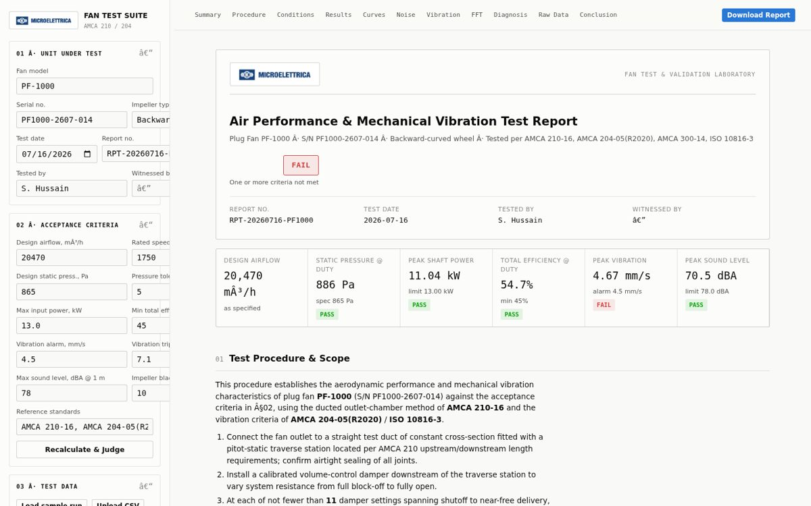
La suite di prova ventilatori secondo AMCA 210: criteri di accettazione, curve di performance, vibrazioni e rumore, giudizio PASS/FAIL automatico e report di laboratorio scaricabile.
«Load sample run» carica subito un giro di prova; volendo puoi usare i dati demo CSV.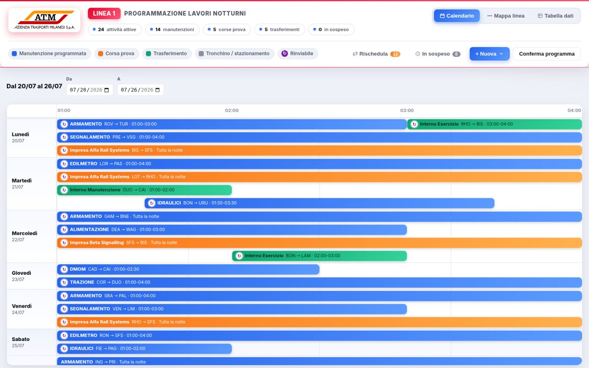
Manutenzioni, corse prova e trasferimenti della metro M1 in un calendario notturno con verifica automatica delle interferenze: importi gli Excel di programmazione e vedi subito cosa può convivere e cosa no.
La demo si apre già piena: la settimana di programmazione demo (manutenzioni, corse prova) viene importata in automatico.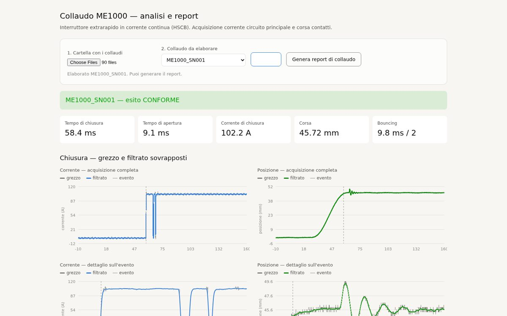
La catena di collaudo dell'interruttore extrarapido ME1000: dal segnale grezzo al filtraggio, alle misure (tempi, correnti, corsa, bouncing) fino al report di collaudo impaginato pronto per il PDF.
La demo precarica 8 collaudi simulati ed elabora il primo da sola; lo zip completo (30 collaudi) resta scaricabile.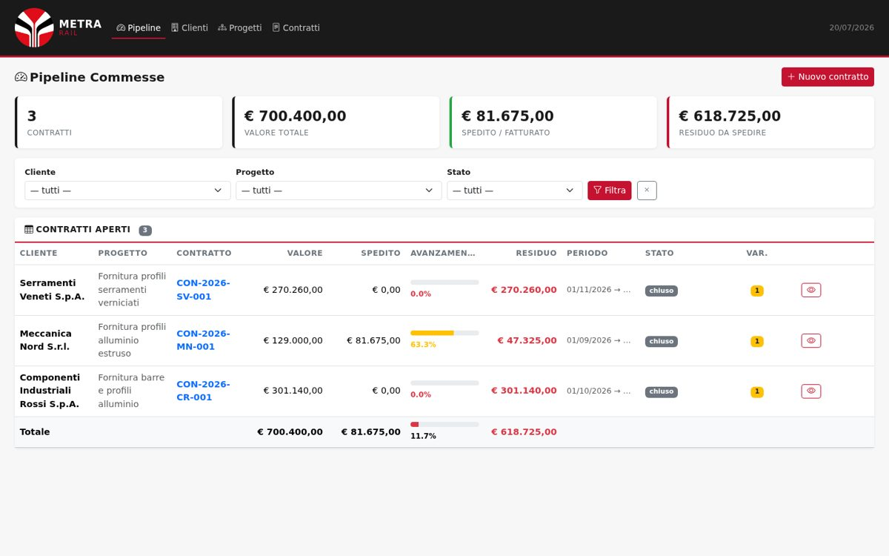
Contratti, spedito e fatturato in un'unica pipeline con avanzamento a colpo d'occhio, import da Excel e closure letter generata e approvata direttamente in app, email precompilata inclusa.
Snapshot navigabile dell'app Flask con dati demo: pipeline, clienti, progetti e dettaglio contratti si esplorano; salvataggi e filtri richiedono l'app reale.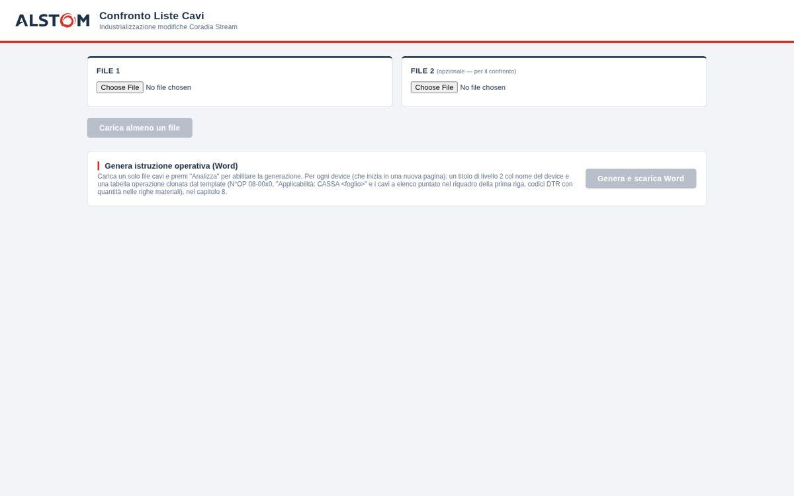
Carichi due liste cavi Excel e ottieni il confronto e l'istruzione operativa Word già impaginata per l'industrializzazione delle modifiche sui Coradia Stream. Un lavoro di ore ridotto a un click.
La demo carica due liste cavi d'esempio e lancia il confronto da sola; puoi scaricarle (rev0, rev1) o sostituirle con i tuoi Excel.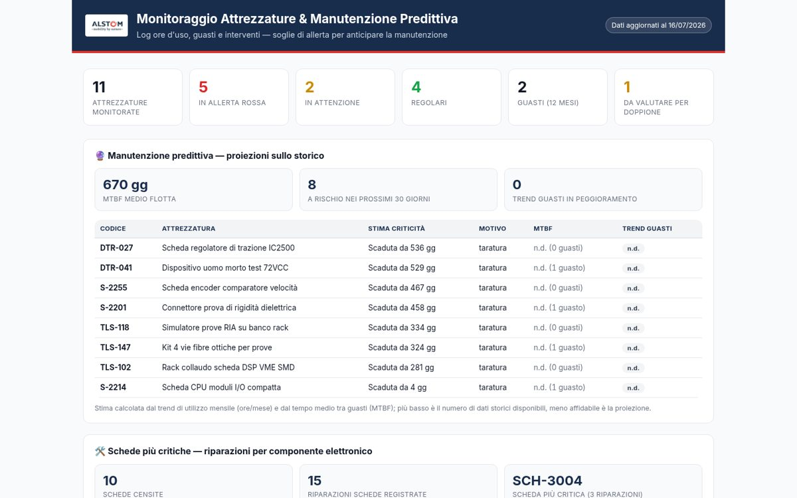
La sala prove sotto controllo in un'unica dashboard: ore d'uso, guasti, scadenze di taratura e proiezioni predittive che segnalano quali attrezzature andranno in manutenzione prima che si fermino.
Demo con i dati d'esempio dell'app; in produzione i dati arrivano live dal server della sala prove.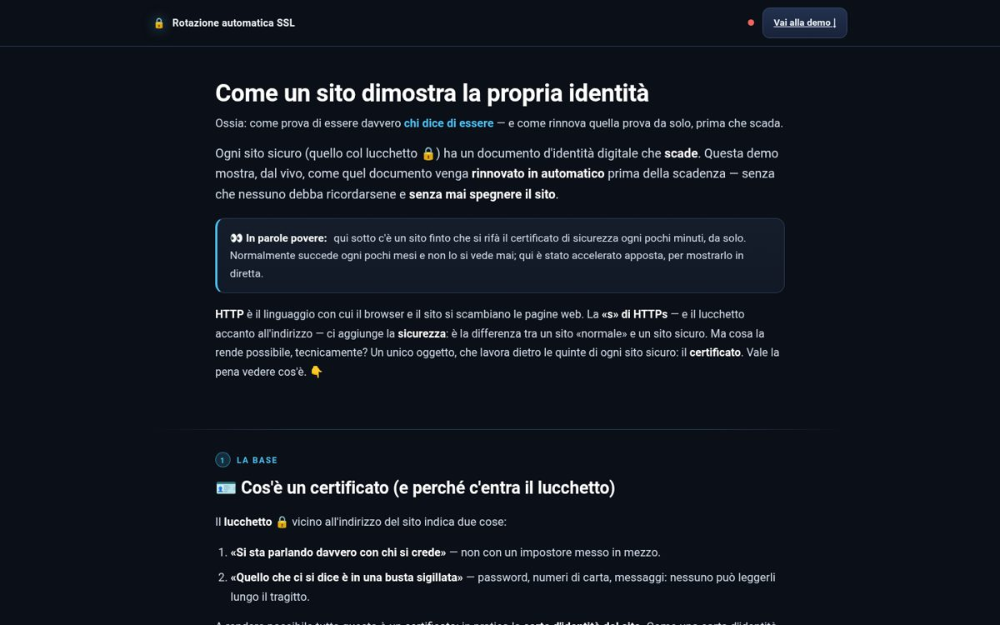
Un proof-of-concept infrastrutturale completo: certificati TLS che si rinnovano da soli (protocollo ACME, nginx, Docker) senza downtime — accompagnato da una spiegazione divulgativa che si legge come un piccolo corso.
La dashboard originale con una CA simulata nel browser: il certificato demo vive 5 minuti e lo vedi ruotare in diretta (o forzi tu il rinnovo). L'infrastruttura vera gira in docker-compose.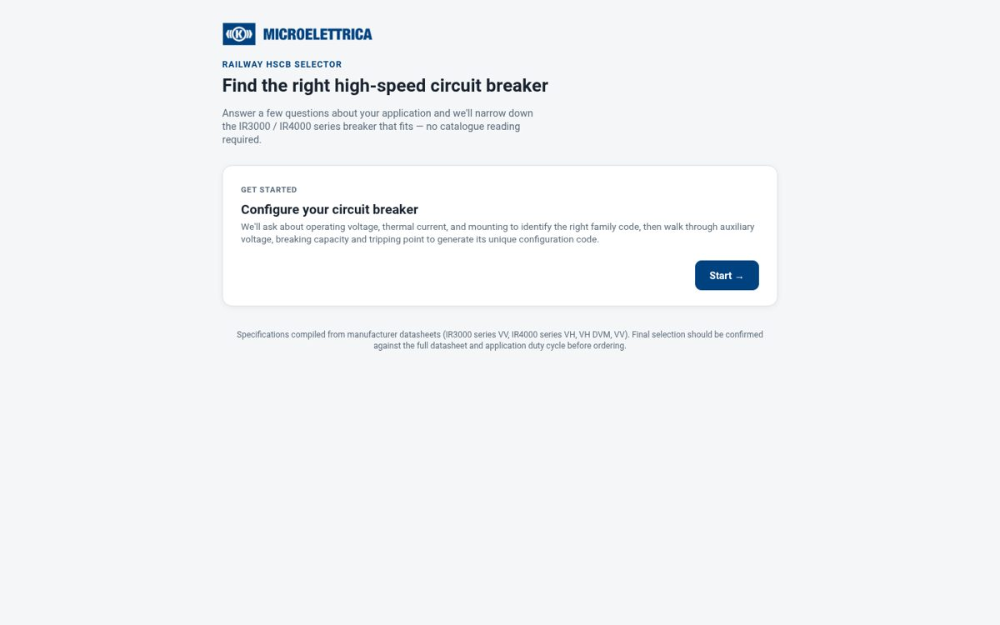
Il configuratore guidato degli interruttori extrarapidi IR3000/IR4000: poche domande sull'applicazione e arrivi al codice di configurazione esatto — senza sfogliare cataloghi.
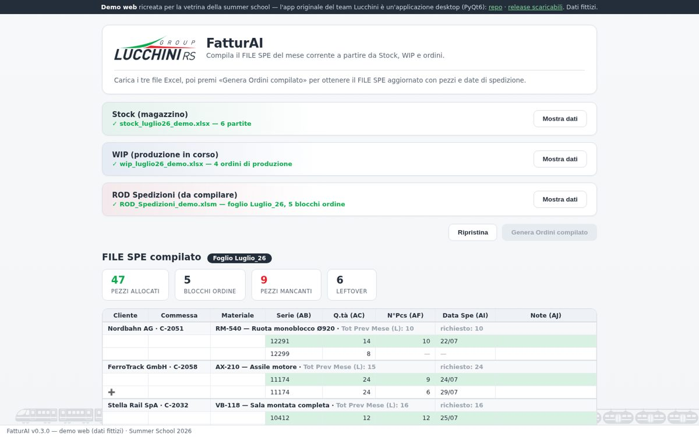
Incrocia stock di magazzino e produzione in corso e compila da solo il ROD Spedizioni del mese, applicando le regole di allocazione del pianificatore — con evidenziazioni, eccedenze/mancanze e una chat AI per interrogare il risultato.
L'originale è un'app desktop (PyQt6) con auto-update, rilasciata via CI: questa è una ricreazione web dimostrativa con dati fittizi e logica semplificata.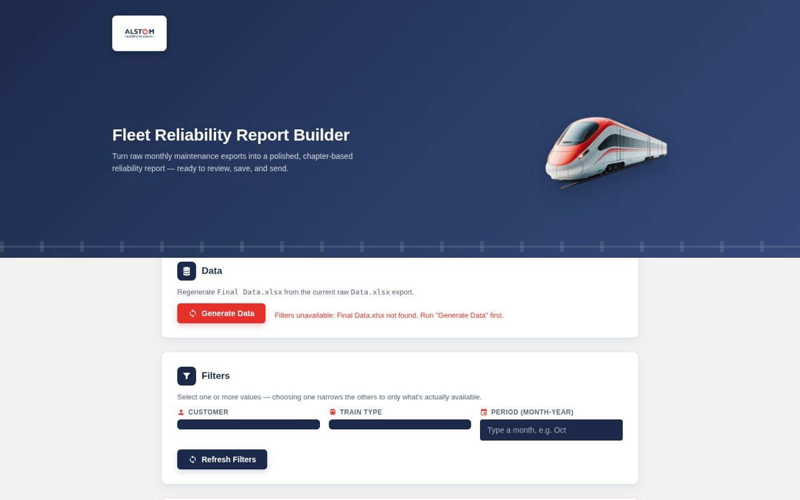
Dagli export mensili di manutenzione a un report di affidabilità flotta impaginato per capitoli, pronto da rivedere, salvare in PDF e inviare via email — tutto dentro un'unica web app.
Interfaccia originale con 42 ticket fittizi e backend simulato: filtri e anteprima funzionano, e il PDF è stato generato col vero motore di report dell'app.